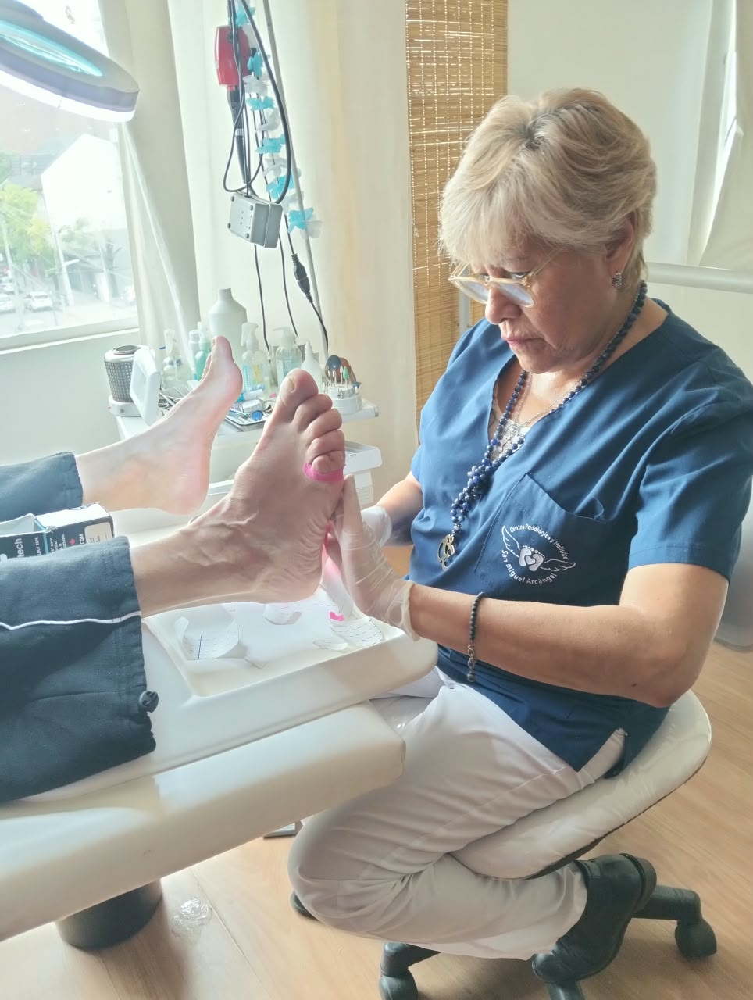

Cuidado de los pies
Podología
Atención especializada en tratamientos para patologías, cuidados y mantenimiento de los pies, con una mirada personalizada.
- Tratamiento para hongos, durezas, uñas encarnadas y más
- Especializados en pacientes diabéticos
- Atención profesional, respetuosa y personalizada